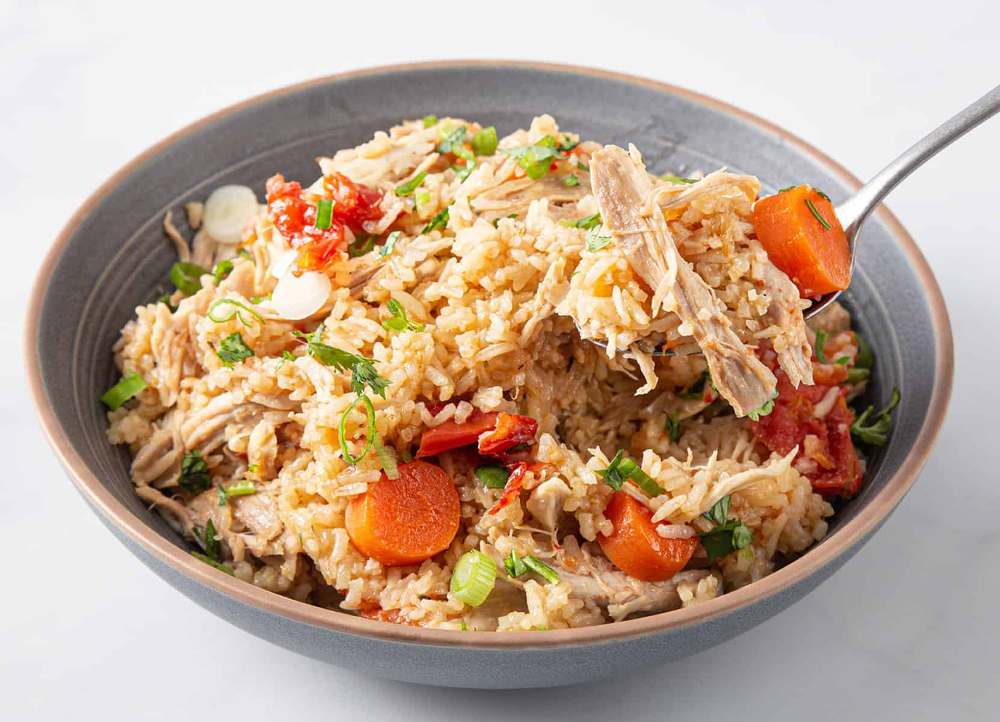

Chicken with rice

Chicken and rice is a common food combination in several cultures which have both chicken and rice as staple foods.
Chicken and rice is also a common staple for people that identify as "Gym Rats" as chicken and rice contains
all of the natural proteins and carbohydrates required for a filling meal.
Ingridients
- Butter
- Onion
- Celery
- Boneless skinless chicken
- Chicken broth
- Rice
- Salt
- Pepper
- Parsley
Steps to make it
- Melt butter in a pot.
- Sauté diced onion and celery until soft.
- Add chicken pieces, season with salt and pepper, and cook until browned.
- Stir in the rice and let it toast for a minute.
- Pour in chicken broth and bring to a boil.
- Reduce heat, cover, and simmer until the rice is tender.
- Fluff the rice with a fork.
- Garnish with parsley and serve hot.
Back Home